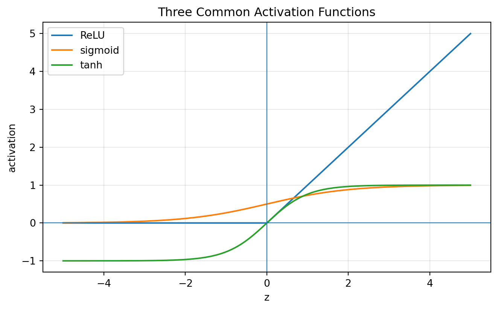
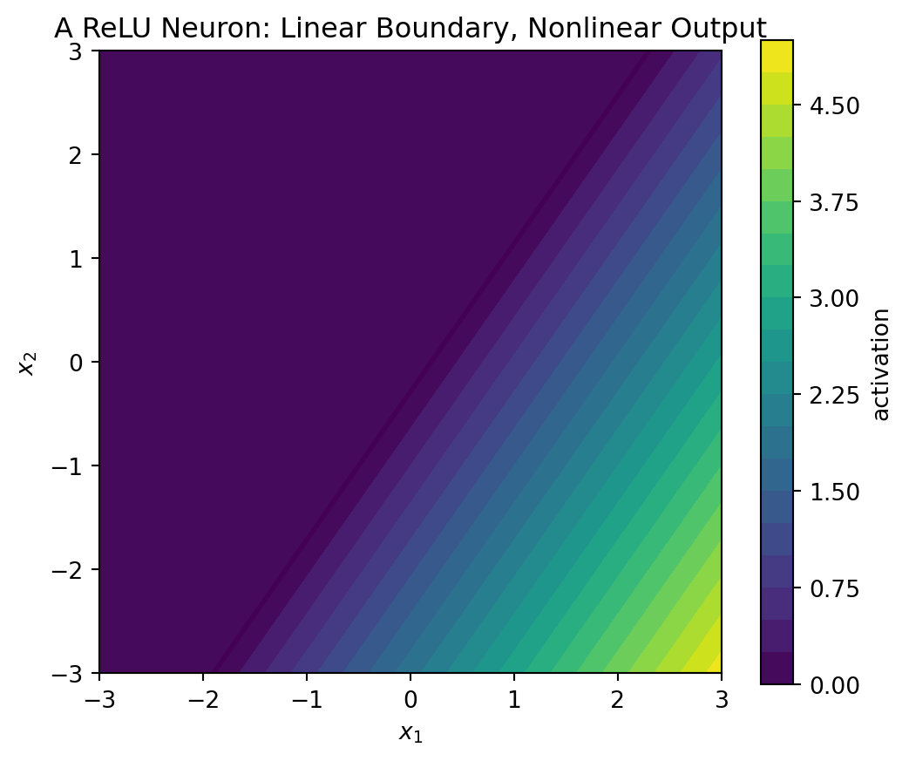
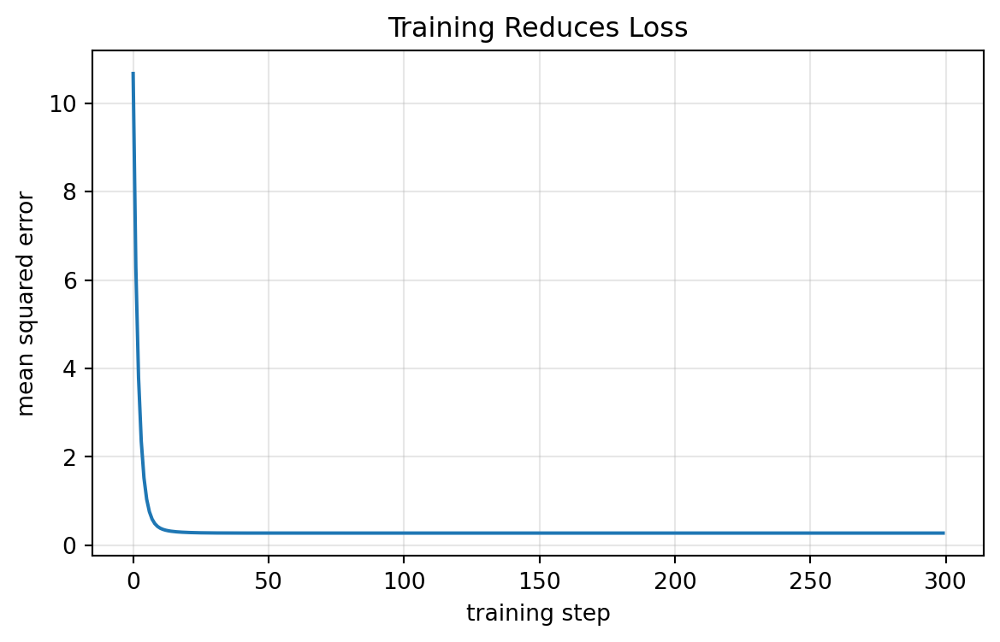
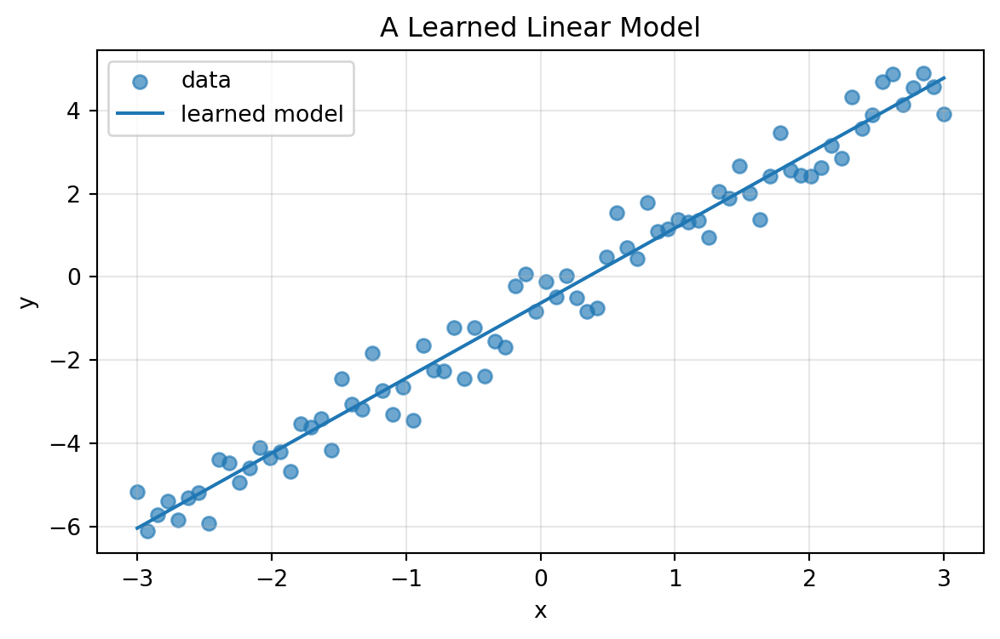
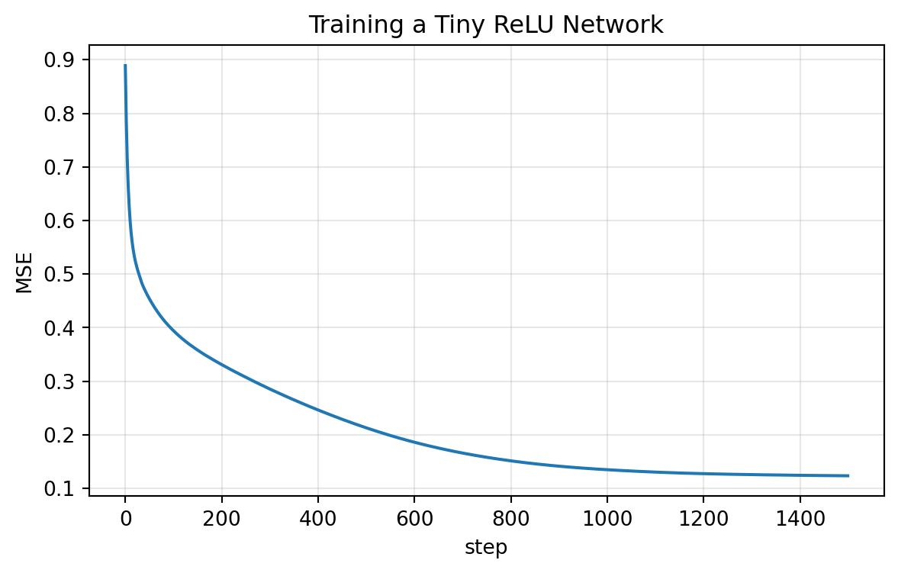
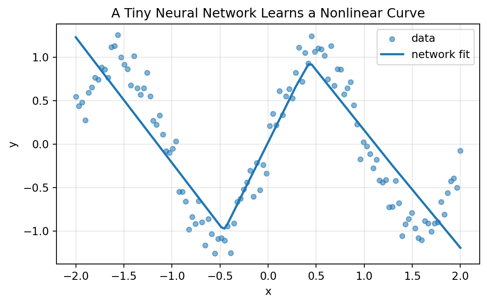

Code
import numpy as np
import matplotlib.pyplot as plt
x = np.array([2, 3], dtype=float)
w = np.array([0.5, -1], dtype=float)
b = 1.0
z = w @ x + b
h = np.maximum(0, z)
z, h(-1.0, 0.0)Layers, weights, activations, representations, and learning
A photograph enters a computer as numbers.
A sentence enters a computer as numbers.
A medical record, a recommendation history, a sound wave, and a scientific measurement all enter a computer as numbers.
At first, these numbers may feel empty. A \(28 \times 28\) image is only \(784\) brightness values. A sentence is only a list of token identifiers. A table row is only a vector of features. But a neural network tries to transform these raw numerical descriptions into more useful descriptions.
For a handwritten digit, early layers may respond to bright pixels and dark pixels. Later layers may respond to edges, strokes, loops, and shapes. Near the end, the network may produce a vector of scores saying:
\[ \text{score}(0),\text{score}(1),\ldots,\text{score}(9). \]
The surprising part is not that the computer stores numbers. We already know that story. The surprising part is that the computer can learn useful coordinate systems for those numbers.
This chapter explains neural networks through the linear algebra language developed throughout this book.
The central message is:
A neural network is a trainable chain of matrix machines with nonlinear gates between them.
A single layer looks like
\[ h = \sigma(Wx+b). \]
The matrix \(W\) mixes features. The bias \(b\) shifts thresholds. The activation function \(\sigma\) introduces nonlinearity. Stacking many such layers creates a representation-learning machine.
By the end of this chapter, you should be able to:
A neuron receives an input vector
\[ x = \begin{bmatrix}x_1\\x_2\\ \vdots \\ x_n\end{bmatrix} \in \mathbb{R}^n. \]
It also has a weight vector
\[ w = \begin{bmatrix}w_1\\w_2\\ \vdots \\ w_n\end{bmatrix} \in \mathbb{R}^n \]
and a bias \(b \in \mathbb{R}\).
First, it computes a weighted score:
\[ z = w \cdot x + b = w_1x_1+w_2x_2+\cdots+w_nx_n+b. \]
Then it applies an activation function \(\sigma\):
\[ h = \sigma(z). \]
So one neuron computes
\[ h = \sigma(w \cdot x+b). \]
Let
\[ x=\begin{bmatrix}2\\3\end{bmatrix}, \quad w=\begin{bmatrix}0.5\\-1\end{bmatrix}, \quad b=1. \]
Then
\[ z=w\cdot x+b=0.5(2)-1(3)+1=-1. \]
If \(\sigma(z)=\operatorname{ReLU}(z)=\max(0,z)\), then
\[ h=\operatorname{ReLU}(-1)=0. \]
import numpy as np
import matplotlib.pyplot as plt
x = np.array([2, 3], dtype=float)
w = np.array([0.5, -1], dtype=float)
b = 1.0
z = w @ x + b
h = np.maximum(0, z)
z, h(-1.0, 0.0)The neuron is inactive because the score is negative.
A linear score alone is not enough to build a flexible model. The activation function changes how a neuron responds to its score.
Common activation functions include:
\[ \operatorname{ReLU}(z)=\max(0,z), \]
\[ \operatorname{sigmoid}(z)=\frac{1}{1+e^{-z}}, \]
and
\[ \tanh(z)=\frac{e^z-e^{-z}}{e^z+e^{-z}}. \]
z_grid = np.linspace(-5, 5, 500)
relu = np.maximum(0, z_grid)
sigmoid = 1 / (1 + np.exp(-z_grid))
tanh = np.tanh(z_grid)
plt.figure(figsize=(8, 4.5))
plt.plot(z_grid, relu, label="ReLU")
plt.plot(z_grid, sigmoid, label="sigmoid")
plt.plot(z_grid, tanh, label="tanh")
plt.axhline(0, linewidth=0.8)
plt.axvline(0, linewidth=0.8)
plt.xlabel("z")
plt.ylabel("activation")
plt.title("Three Common Activation Functions")
plt.legend()
plt.grid(True, alpha=0.3)
plt.show()
The matrix part mixes information linearly. The activation part bends the computation.
Without activation functions, a deep network collapses into one linear map.
Suppose a two-layer network has no activation:
\[ h = W_1x, \]
\[ y = W_2h. \]
Then
\[ y = W_2W_1x. \]
Since \(W_2W_1\) is another matrix, the two layers are equivalent to one linear transformation.
More generally, if every layer is linear, then
\[ W_LW_{L-1}\cdots W_2W_1x \]
is still only one linear transformation.
Depth alone does not create nonlinear flexibility. The nonlinear activation functions are what prevent the network from collapsing into one matrix.
This is why neural networks combine linear algebra with nonlinear gates.
A layer contains many neurons. If there are \(m\) neurons and \(n\) input features, the layer has a weight matrix
\[ W \in \mathbb{R}^{m \times n}. \]
Each row of \(W\) is the weight vector for one neuron:
\[ W= \begin{bmatrix} ---w_1^T---\\ ---w_2^T---\\ \vdots\\ ---w_m^T--- \end{bmatrix}. \]
The layer computes
\[ z = Wx+b, \]
where \(b \in \mathbb{R}^m\). Then it applies an activation component by component:
\[ h = \sigma(z)=\sigma(Wx+b). \]
| Object | Shape | Meaning |
|---|---|---|
| \(x\) | \(n \times 1\) | input vector |
| \(W\) | \(m \times n\) | weight matrix |
| \(b\) | \(m \times 1\) | bias vector |
| \(z=Wx+b\) | \(m \times 1\) | pre-activation scores |
| \(h=\sigma(z)\) | \(m \times 1\) | hidden representation |
A neural network layer is
\[ h=\sigma(Wx+b). \]
The same matrix layer has two useful interpretations.
The \(i\)th row of \(W\) gives one neuron:
\[ z_i = w_i \cdot x + b_i. \]
So each row asks:
How strongly does this input match my learned pattern?
Write
\[ W = \begin{bmatrix} | & | & & | \\ c_1 & c_2 & \cdots & c_n \\ | & | & & | \end{bmatrix}. \]
Then
\[ Wx=x_1c_1+x_2c_2+\cdots+x_nc_n. \]
So each input coordinate controls one column contribution to the whole hidden vector.
Let
\[ x=\begin{bmatrix}2\\3\end{bmatrix}, \quad W=\begin{bmatrix} 1&0\\ 0&1\\ 1&-1 \end{bmatrix}, \quad b=\begin{bmatrix}0\\0\\1\end{bmatrix}. \]
Then
\[ z=Wx+b, \quad h=\operatorname{ReLU}(z). \]
def relu(z):
return np.maximum(0, z)
x = np.array([2.0, 3.0])
W = np.array([[1, 0], [0, 1], [1, -1]], dtype=float)
b = np.array([0, 0, 1], dtype=float)
z = W @ x + b
h = relu(z)
z, h(array([2., 3., 0.]), array([2., 3., 0.]))The layer changes a vector in \(\mathbb{R}^2\) into a vector in \(\mathbb{R}^3\).
A two-layer network may be written as
\[ h = \sigma(W_1x+b_1), \]
\[ \hat{y}=W_2h+b_2. \]
Combining them gives
\[ \hat{y}=W_2\sigma(W_1x+b_1)+b_2. \]
A deeper network repeats this pattern:
\[ x \longmapsto h_1 \longmapsto h_2 \longmapsto \cdots \longmapsto h_L \longmapsto \hat{y}. \]
This is composition, one of the central ideas in mathematics.
A forward pass means computing the output from the input.
x = np.array([2.0, 3.0])
W1 = np.array([
[1.0, 0.0],
[0.0, 1.0],
[1.0, -1.0]
])
b1 = np.array([0.0, 0.0, 1.0])
W2 = np.array([[1.0, 1.0, -1.0]])
b2 = np.array([0.5])
h = relu(W1 @ x + b1)
y_hat = W2 @ h + b2
h, y_hat(array([2., 3., 0.]), array([5.5]))This is the computation a neural network performs before it knows whether its prediction is correct.
In practice, we usually process many examples at the same time.
Let \(X \in \mathbb{R}^{N \times n}\) be a data matrix whose rows are examples. If \(W \in \mathbb{R}^{m \times n}\), then the batch version of the layer is
\[ Z=XW^T+\mathbf{1}b^T, \]
where \(Z \in \mathbb{R}^{N \times m}\).
X = np.array([
[2.0, 3.0],
[1.0, 1.0],
[4.0, 0.5],
[-1.0, 2.0]
])
Z = X @ W1.T + b1
H = relu(Z)
Harray([[2. , 3. , 0. ],
[1. , 1. , 1. ],
[4. , 0.5, 4.5],
[0. , 2. , 0. ]])This is why modern AI depends so heavily on fast matrix multiplication.
A single linear neuron has a decision boundary
\[ w\cdot x+b=0. \]
In two dimensions, this is a line. In higher dimensions, it is a hyperplane.
A ReLU neuron changes behavior on the two sides of this boundary:
\[ \operatorname{ReLU}(w\cdot x+b)= \begin{cases} 0, & w\cdot x+b\leq 0,\\ w\cdot x+b, & w\cdot x+b>0. \end{cases} \]
x1 = np.linspace(-3, 3, 300)
x2 = np.linspace(-3, 3, 300)
X1, X2 = np.meshgrid(x1, x2)
w_boundary = np.array([1.0, -0.7])
b_boundary = -0.2
Z = w_boundary[0]*X1 + w_boundary[1]*X2 + b_boundary
A = np.maximum(0, Z)
plt.figure(figsize=(6, 5))
plt.contourf(X1, X2, A, levels=20)
plt.contour(X1, X2, Z, levels=[0], linewidths=2)
plt.xlabel("$x_1$")
plt.ylabel("$x_2$")
plt.title("A ReLU Neuron: Linear Boundary, Nonlinear Output")
cf = plt.contourf(X1, X2, A, levels=20)
plt.colorbar(cf, label="activation")
plt.gca().set_aspect("equal", adjustable="box")
plt.show()
For classification, the last layer often outputs one score per class.
For example,
\[ s=\begin{bmatrix}s_1\\s_2\\s_3\end{bmatrix} \]
could represent scores for three classes.
The predicted class is the one with the largest score.
scores = np.array([1.2, 3.5, 0.7])
classes = np.array(["cat", "dog", "bird"])
classes[np.argmax(scores)]'dog'Softmax converts scores into positive numbers that add to \(1\):
\[ p_i=\frac{e^{s_i}}{\sum_{j=1}^k e^{s_j}}. \]
def softmax(scores):
shifted = scores - np.max(scores)
exp_scores = np.exp(shifted)
return exp_scores / exp_scores.sum()
softmax(scores)array([0.08635047, 0.86127533, 0.05237421])Softmax turns raw class scores into a probability distribution.
A network needs feedback. The loss function tells the network how wrong it is.
For regression, a common loss is mean squared error:
\[ L=\frac{1}{N}\sum_{i=1}^N (y_i-\hat{y}_i)^2. \]
For classification, a common loss is cross-entropy. If the true class is \(c\), and the softmax probability assigned to that class is \(p_c\), then the loss for one example is
\[ L=-\log(p_c). \]
A confident correct prediction has small loss. A confident wrong prediction has large loss.
The weights and biases are learned from data. Training means solving an optimization problem:
\[ \min_{W_1,b_1,W_2,b_2,\ldots} L. \]
Gradient descent updates parameters by moving against the gradient:
\[ \theta_{\text{new}} = \theta_{\text{old}}-\eta \nabla L(\theta_{\text{old}}). \]
Here \(\eta\) is the learning rate and \(\theta\) represents all trainable parameters.
A neural network learns by changing matrices and bias vectors so that the loss decreases.
We first train the simplest model:
\[ \hat{y}=wx+b. \]
np.random.seed(7)
X_train = np.linspace(-3, 3, 80)
y_train = 1.8 * X_train - 0.6 + 0.5*np.random.normal(size=80)
w = 0.0
b = 0.0
eta = 0.04
loss_history = []
for step in range(300):
y_pred = w * X_train + b
error = y_pred - y_train
loss = np.mean(error**2)
loss_history.append(loss)
grad_w = 2*np.mean(error * X_train)
grad_b = 2*np.mean(error)
w -= eta * grad_w
b -= eta * grad_b
w, b, loss_history[-1](1.8025337939337942, -0.6310421664257352, 0.2776807055918692)plt.figure(figsize=(7, 4))
plt.plot(loss_history)
plt.xlabel("training step")
plt.ylabel("mean squared error")
plt.title("Training Reduces Loss")
plt.grid(True, alpha=0.3)
plt.show()
plt.figure(figsize=(7, 4))
plt.scatter(X_train, y_train, alpha=0.65, label="data")
plt.plot(X_train, w*X_train+b, label="learned model")
plt.xlabel("x")
plt.ylabel("y")
plt.title("A Learned Linear Model")
plt.legend()
plt.grid(True, alpha=0.3)
plt.show()

This example is not deep, but it shows the essential training idea: parameters move to reduce loss.
The XOR pattern is a classic example because it is not linearly separable.
The four input points are
\[ (0,0), (0,1), (1,0), (1,1), \]
with labels
\[ 0,1,1,0. \]
No single line separates the \(1\)s from the \(0\)s. But a network with a hidden layer can do it.
The following hand-built network uses ReLU features:
\[ h_1=\operatorname{ReLU}(x_1+x_2), \]
\[ h_2=\operatorname{ReLU}(x_1+x_2-1), \]
and then combines them as
\[ \hat{y}=h_1-2h_2. \]
X_xor = np.array([[0,0], [0,1], [1,0], [1,1]], dtype=float)
W1_xor = np.array([[1, 1], [1, 1]], dtype=float)
b1_xor = np.array([0, -1], dtype=float)
W2_xor = np.array([[1, -2]], dtype=float)
b2_xor = np.array([0], dtype=float)
H_xor = relu(X_xor @ W1_xor.T + b1_xor)
y_xor_score = H_xor @ W2_xor.T + b2_xor
np.c_[X_xor, H_xor, y_xor_score]array([[0., 0., 0., 0., 0.],
[0., 1., 1., 0., 1.],
[1., 0., 1., 0., 1.],
[1., 1., 2., 1., 0.]])This tiny example shows the power of hidden representations. The hidden layer creates new features that make the pattern easier to express.
A grayscale \(28 \times 28\) image can be flattened into a vector in \(\mathbb{R}^{784}\).
If a fully connected layer has \(128\) neurons, then
\[ W \in \mathbb{R}^{128 \times 784}. \]
The layer has
\[ 128 \cdot 784 \]
weights and \(128\) biases.
num_weights = 128 * 784
num_biases = 128
num_weights + num_biases100480This is already many parameters for a tiny image. For larger images, fully connected layers become very expensive. This motivates convolutional layers, which use small local filters instead of dense connections.
For text, the first step is often embedding: each token becomes a vector.
A sentence of \(n\) tokens with embedding dimension \(d\) becomes a matrix
\[ X \in \mathbb{R}^{n \times d}. \]
Modern language models repeatedly transform these token vectors.
One important operation is attention. In simplified form, attention uses three matrices:
\[ Q=XW_Q, \quad K=XW_K, \quad V=XW_V. \]
Then it computes dot-product scores:
\[ QK^T. \]
So even modern language models are filled with matrix multiplication, dot products, and vector representations.
| Earlier idea | Neural-network meaning |
|---|---|
| Vector | input, hidden state, embedding, output |
| Matrix | weight layer, projection, feature mixer |
| Dot product | neuron score, similarity score, attention score |
| Norm | error size, weight size, regularization |
| Projection | feature extraction and approximation |
| Orthogonality | stable coordinates, decorrelation, initialization ideas |
| Eigenvalues | stability of repeated transformations |
| SVD | compression, denoising, low-rank structure |
| Optimization | training weights to reduce loss |
| Geometry | decision boundaries and representation spaces |
Neural networks do not replace linear algebra. They intensify it.
Neural networks are powerful, but they are not magic.
They can learn flexible patterns from data, but they also depend on:
A model may fit training data well but fail on new data. It may rely on spurious patterns. It may be hard to interpret. It may behave unpredictably outside the training distribution.
Linear algebra helps us ask better questions:
A layer takes \(20\) input features and produces \(7\) hidden features. Then
\[ W \in \mathbb{R}^{7 \times 20}, \quad b \in \mathbb{R}^7, \quad h \in \mathbb{R}^7. \]
It has
\[ 7\cdot 20+7=147 \]
trainable parameters.
Let
\[ W_1=\begin{bmatrix}1&2\\0&1\end{bmatrix}, \quad W_2=\begin{bmatrix}2&0\\1&1\end{bmatrix}. \]
Without activation, the two-layer map is
\[ y=W_2W_1x. \]
Compute
\[ W_2W_1 = \begin{bmatrix}2&4\\1&3\end{bmatrix}. \]
So the two layers are equivalent to the single matrix
\[ \begin{bmatrix}2&4\\1&3\end{bmatrix}. \]
Suppose a classifier returns scores
\[ s=\begin{bmatrix}1.0\\2.0\\0.5\end{bmatrix}. \]
The largest score is the second score, so the predicted class is class \(2\). The softmax probabilities are
softmax(np.array([1.0, 2.0, 0.5]))array([0.2312239 , 0.62853172, 0.14024438])Let
\[ x=\begin{bmatrix}1\\2\\-1\end{bmatrix}, \quad w=\begin{bmatrix}3\\-1\\2\end{bmatrix}, \quad b=4. \]
Compute \(z=w\cdot x+b\) and \(\operatorname{ReLU}(z)\).
\[ z=3(1)-1(2)+2(-1)+4=3. \]
Therefore
\[ \operatorname{ReLU}(z)=3. \]
Let
\[ W=\begin{bmatrix} 1&0\\ 0&1\\ 1&1 \end{bmatrix}, \quad x=\begin{bmatrix}2\\4\end{bmatrix}, \quad b=\begin{bmatrix}0\\0\\-3\end{bmatrix}. \]
Compute \(z=Wx+b\) and \(h=\operatorname{ReLU}(z)\).
\[ Wx=\begin{bmatrix}2\\4\\6\end{bmatrix}, \quad z=\begin{bmatrix}2\\4\\3\end{bmatrix}. \]
All entries are positive, so
\[ h=\begin{bmatrix}2\\4\\3\end{bmatrix}. \]
A layer has input dimension \(50\) and output dimension \(12\). What is the shape of its weight matrix? How many biases does it have?
The weight matrix has shape \(12 \times 50\). The bias vector has \(12\) entries.
A flattened color image has dimension \(32\cdot 32\cdot 3\). A fully connected layer has \(200\) neurons. How many weights and biases does the layer have?
The input dimension is
\[ 32\cdot 32\cdot 3=3072. \]
The layer has
\[ 200\cdot 3072=614400 \]
weights and \(200\) biases.
Explain why nonlinear activation functions are necessary in deep networks.
Without nonlinear activations, each layer is a linear transformation. The composition of linear transformations is still linear, so the whole deep network would be equivalent to one matrix. Nonlinear activations prevent this collapse and allow the network to represent more flexible patterns.
What is a hidden representation? Give one example from images and one from text.
A hidden representation is an internal vector produced by a hidden layer. For images, it might encode edges or shapes. For text, it might encode semantic information about a word or sentence.
Why is batch computation written as \(Z=XW^T+\mathbf{1}b^T\) instead of repeating one example at a time?
The batch formula processes many examples simultaneously using one matrix multiplication. This is more efficient and matches how modern hardware accelerates neural network computation.
Why is a single neuron in \(\mathbb{R}^2\) unable to represent the XOR pattern by itself?
A single threshold neuron separates the plane with one line. The XOR labels cannot be separated by one line, so a single linear decision boundary is not enough.
x = np.array([1, 2, -1], dtype=float)
w = np.array([3, -1, 2], dtype=float)
b = 4.0
z = w @ x + b
h = relu(z)
z, h(3.0, 3.0)W = np.array([[1, 0], [0, 1], [1, 1]], dtype=float)
x = np.array([2, 4], dtype=float)
b = np.array([0, 0, -3], dtype=float)
z = W @ x + b
h = relu(z)
z, h(array([2., 4., 3.]), array([2., 4., 3.]))X = np.array([
[2, 4],
[1, 1],
[3, 0],
[0, 2]
], dtype=float)
Z = X @ W.T + b
H = relu(Z)
Harray([[2., 4., 3.],
[1., 1., 0.],
[3., 0., 0.],
[0., 2., 0.]])scores = np.array([2.0, 0.5, 1.2, 3.1])
softmax(scores)array([0.21382941, 0.04771179, 0.09607975, 0.64237905])# A small NumPy network for a nonlinear one-dimensional curve.
np.random.seed(3)
X = np.linspace(-2, 2, 120).reshape(-1, 1)
y = (np.sin(3*X[:, 0]) + 0.15*np.random.randn(120)).reshape(-1, 1)
hidden = 12
W1 = 0.5*np.random.randn(hidden, 1)
b1 = np.zeros((hidden,))
W2 = 0.5*np.random.randn(1, hidden)
b2 = np.zeros((1,))
eta = 0.02
losses = []
for step in range(1500):
Z1 = X @ W1.T + b1
H = np.maximum(0, Z1)
Yhat = H @ W2.T + b2
E = Yhat - y
loss = np.mean(E**2)
losses.append(loss)
dY = 2*E/len(X)
dW2 = dY.T @ H
db2 = dY.sum(axis=0)
dH = dY @ W2
dZ1 = dH * (Z1 > 0)
dW1 = dZ1.T @ X
db1 = dZ1.sum(axis=0)
W2 -= eta*dW2
b2 -= eta*db2
W1 -= eta*dW1
b1 -= eta*db1
plt.figure(figsize=(7, 4))
plt.plot(losses)
plt.xlabel("step")
plt.ylabel("MSE")
plt.title("Training a Tiny ReLU Network")
plt.grid(True, alpha=0.3)
plt.show()
plt.figure(figsize=(7, 4))
plt.scatter(X[:, 0], y[:, 0], s=20, alpha=0.55, label="data")
plt.plot(X[:, 0], Yhat[:, 0], linewidth=2, label="network fit")
plt.xlabel("x")
plt.ylabel("y")
plt.title("A Tiny Neural Network Learns a Nonlinear Curve")
plt.legend()
plt.grid(True, alpha=0.3)
plt.show()

Ask an AI tool:
Explain a neuron as a dot product plus bias followed by an activation function. Give one numerical example.
Then check the example by hand.
Ask:
A neural network layer has 8 inputs and 5 neurons. What are the shapes of \(W\), \(x\), \(b\), \(z\), and \(h\) in \(h=\sigma(Wx+b)\)?
Then create your own example with different dimensions.
Ask:
Why do stacked linear layers without nonlinear activation collapse into one linear map?
Then write the explanation using matrix multiplication.
Ask:
Explain representation learning using examples from images, text, and recommendation systems.
Then summarize the answer in your own words.
Ask:
Connect neural networks to vectors, matrices, dot products, projections, SVD, optimization, and geometry.
Then make a concept map.
A neuron computes
\[ h=\sigma(w\cdot x+b). \]
A layer computes
\[ h=\sigma(Wx+b). \]
A network composes many layers:
\[ x \longmapsto h_1 \longmapsto h_2 \longmapsto \cdots \longmapsto \hat{y}. \]
Weight matrices mix features. Bias vectors shift thresholds. Activation functions create nonlinearity. Hidden layers build learned representations. Training adjusts all trainable parameters to reduce loss.
In the language of this book:
Neural networks are not magic boxes. They are trainable chains of matrix transformations, nonlinear gates, and learned coordinate systems.
In the next chapter, we turn to recommendation systems, where matrices record preferences and missing entries become predictions.